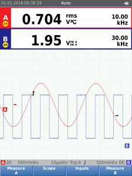
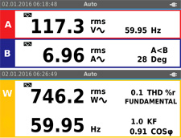
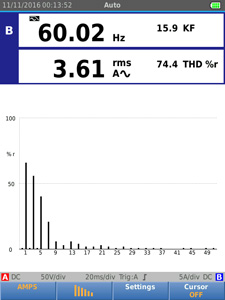
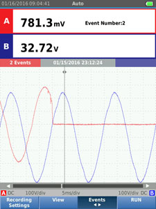
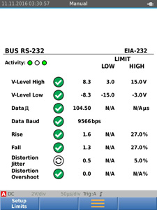
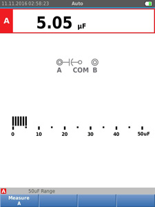

|
|
|
Einfachere Messungen, tiefere Einblicke und schnellere Fehlersuche in der Elektromechanik Die kompakten und robusten Oszilloskope der ScopeMeter®-Serie 120B bieten Lösungen zur Fehlersuche bei elektromechanischen Geräten und in der Instandhaltung. Es sind voll integrierte, bedienungsfreundliche Messgeräte, die ein Oszilloskop, ein Multimeter und einen schnellen Messdatenrecorder in einem Gehäuse vereinen. ScopeMeter der Serie 120B sind auch mit der Fluke-Connect®-App sowie der Software FlukeView® für ScopeMeter kompatibel und sorgen für eine noch umfangreichere Zusammenarbeit, Datenanalyse und die Archivierung wichtiger Informationen.
|
Die ScopeMeter-Industrieoszilloskope der Serie 120B enthalten innovative Funktionen, mit denen Techniker die Fehlersuche beschleunigen und anhand der Ergebnisse ihre Systeme betriebsbereit halten können. Signalform-Anzeige mit der Trigger- und Konfigurationstechnologie Connect-and-View™ sowie automatische Anzeige zugehöriger Messergebnisse erfolgen mithilfe der Fluke-IntellaSet™-Technologie – und all das ohne jegliche manuelle Einstellungen. Mithilfe der „Recorder Event Detect“-Funktionen werden schwer zu erfassende intermittierende Ereignisse erfasst und protokolliert und können so leicht angezeigt und analysiert werden.- Digitales Zweikanal-Oszilloskop und Multimeter
- Oszilloskopbandbreite von 40 MHz oder 20 MHz
- Zweikanal-Echteffektiv-Digitalmultimeter mit einem Anzeigeumfang von 5000 Zählschritten
- Einfache Bedienung durch die Automatik-Triggerung Connect-and-View™
- Die IntellaSet™-Technologie passt die numerische Anzeige anhand des gemessenen Signals automatisch und intelligent an
- Zweikanaliger Signalform- und Messdatenrecorder zur
Trenddarstellung von Daten über längere Zeiträume
- „Recorder Event Detect“-Funktion erkennt schwer zu erfassende intermittierende Signale bei sich wiederholenden Signalformen bis 4 kHz
- Abgeschirmtes Messleitungspaar für alle Oszilloskop-, Widerstands- und Durchgangsmessungen
- Widerstands-, Durchgangs-, Dioden- und Kapazitätsmessungen
- Leistungs- und Leistungsfaktormessungen (W, VA, VAR, cos φ, λ, Hz)
- Spannungs-, Strom- und Leistungsoberschwingungen
- Prüfung industrieller Netzwerke mit Busstabilitätsprüfungen auf der physischen Schicht anhand definierter Referenzpegel
- Speichern oder Abrufen von Daten und Geräteeinstellungen
- Speichern von Geräteeinstellungen, die als Prüfsequenzen für die routinemäßige Instandhaltung oder für häufig angewendete Messungen genutzt werden.
- Optisch getrennte USB-Schnittstelle zur Übertragung, Archivierung und Analyse von Oszilloskop- und Multimeterdaten
- Optionaler, mit dem internen USB-Anschluss verbundener WLAN-Adapter zur drahtlosen Übertragung von Daten zu PCs oder zur Fluke-Connect®-App*
- ScopeMeter®-Software FlukeView® für Windows®
- Robustes Design sorgt für Widerstandsfähigkeit gegen Schwingungen bis 3 g und Stöße bis 30 g,
IP-Schutzklasse IP 51 gemäß EN/IEC 60529
- Höchste Sicherheitsspezifikation bei transportablen Oszilloskopen: Überspannungskategorie CAT IV 600 V gemäß EN/IEC 61010-1
- Li-Ionen-Akku, sieben Stunden Betriebsdauer (bei
einer Ladezeit von 4 Stunden)
*Es sind nicht alle Modelle in allen Ländern erhältlich. Wenden Sie sich bitte an Ihren Fluke-Vertriebspartner. | | Connect-and-View™-Triggerung zur sofortigen und stabilen Signaldarstellung | Oszilloskopbenutzer wissen, wie schwierig die Triggerung sein kann. Die Verwendung der falschen Einstellungen kann zu einer instabilen Signalformerfassung und in manchen Fällen zu falschen Messdaten führen. Die einzigartige Connect-and-View™-Triggertechnologie von Fluke erkennt Signalmuster, richtet die entsprechende Triggerung automatisch ein und sorgt damit für eine stabile, zuverlässige und wiederholbare Anzeige. Die Connect-and-View™-Triggerung wurde zur Verwendung bei nahezu jedem Signal entwickelt (einschließlich Steuersignalen und Signalen von Frequenzumrichtern) und erfolgt ohne Anpassung von Parametern sowie ohne Betätigung von Tasten. Signalwechsel werden sofort erkannt und die automatische Anpassung der Einstellungen sorgt selbst bei Messungen an mehreren Messpunkten in schneller Abfolge für eine stabile Anzeige. IntellaSet™/AutoReading Die automatische Messwertfunktion mit Fluke-IntellaSet™-Technologie nutzt proprietäre Algorithmen zur intelligenten Analyse der gemessenen Signalform und zeigt automatisch die am besten geeigneten Messwerte auf dem Bildschirm an. So erhalten Sie die notwendigen Daten einfacher denn je. Wenn es sich bei der gemessenen Signalform z. B. um ein Netzspannungssignal handelt, werden automatisch die Veff- und Hz-Messwerte angezeigt, und wenn es sich um ein Rechtecksignal handelt, werden die VSpitze-Spitze- und Hz-Messwerte angezeigt. Bei Verwendung der IntellaSet™-Technologie in Kombination mit der automatischen Connect-and-View™-Triggerung wird nicht nur die richtige Signalform, sondern auch der entsprechende Messwert auf dem Bildschirm angezeigt. Und das ohne Betätigung einer Taste. |  Mit der Fluke-Connect-and-View™-Triggerung und der IntellaSet™-Technologie haben Sie die benötigten Daten sofort im Blick. | Industrieanlagen erfordern zum reibungslosen Betrieb eine zuverlässige Stromversorgung. Zur Messung wichtiger Leistungsparameter besitzt das ScopeMeter zwei Eingänge. | | Bei einphasigen oder symmetrischen dreiphasigen Systemen messen die zwei Eingänge der Industrie-ScopeMeter® der Serie 120B den Effektivwert der Gleich- und Wechselstromspannung an Kanal A und des Gleich- und Wechselstroms an Kanal B. Dann berechnet das Messgerät die Frequenz, den Phasenwinkel, die Wirkleistung (kW), Schein- oder Blindleistung (VA oder VAR), den Leistungsfaktor (PF bzw. λ) oder den Wirkfaktor (Displacement Power Factor, DPF bzw. cos φ). Außerdem kann es die Leistungswerte für ein Dreiphasensystem berechnen, bei dem alle Phasen dieselben Spannungs- und Stromwerte aufweisen. Dies gilt sowohl für symmetrische Systeme als auch für Ohmsche Lasten. |  | Einfacher Zugriff auf wichtige Leistungsdaten zur Überprüfung der Betriebseigenschaften eines Systems. | | Oberschwingungsmessungen | | Oberschwingungen sind periodische Störungen von Spannungs-, Strom- oder Leistungssinuswellen. Oberschwingungen werden häufig durch nichtlineare Lasten wie Schaltnetzteile und Frequenzumrichter verursacht. Oberschwingungen können eine Überhitzung von Transformatoren, Leitern und Motoren zur Folge haben. In der Oberschwingungsfunktion misst das Messgerät bis zur 51. Oberschwingung. Zugehörige Daten wie Gleichstromanteil, Gesamtverzerrung (Total Harmonic Distortion, THD) und K-Faktor bieten eine vollständige Übersicht über den elektrischen Betriebszustand Ihrer Verbraucher. |  | Übersicht über das Oberschwingungsspektrum mit Cursorn zur Messung der Verzerrungen als Prozentsatz der Grundschwingung. | Verwenden Sie die verschiedenen Recorderbetriebsarten zur Erkennung von intermittierenden Fehlern. | | Am schwierigsten sind diejenigen Fehler aufzuspüren, die nur ab und zu auftreten. Sie können durch fehlerhafte Verbindungen, Staub, Schmutz, Korrosion oder einfach durch defekte Leitungen oder Steckverbinder verursacht werden. Weitere Faktoren wie Netzausfälle und Spannungseinbrüche können ebenfalls zu intermittierenden Ereignissen und zu Anlagenstillständen führen. Wenn diese Ereignisse auftreten, sind Sie vielleicht gerade nicht vor Ort. Aber Ihr Fluke ScopeMeter® ist es. Sie können entweder den Minimal- und Maximal-Spitzenwert darstellen oder die Signalform aufzeichnen. Mit Hilfe des erweiterbaren MicroSD-Speichers können Aufzeichnungen über einen Zeitraum von maximal 14 Tagen vorgenommen werden. Der Recorder ist in Kombination mit der „Recorder Event Detect“-Funktion noch leistungsfähiger, die die Erkennung und Protokollierung intermittierender Fehler erheblich vereinfacht. Sie können für eine Messung oder eine Oszilloskopkurve einen Schwellenwert festlegen. Abweichungen werden als einmalige Ereignisse markiert. Sie müssen keine großen Datenmengen mehr durchforsten, um Fehler aufzuspüren, können schnell von einem markierten Ereignis zum nächsten springen und haben gleichzeitig Zugriff auf den gesamten Datensatz. |  | Rasche Durchsicht aufgezeichneter Ereignisse
zur Erkennung und Behebung von intermittierenden Fehlern. | Die Busstabilitätsprüfung dient zur Kontrolle der Signalqualität von Industriebussystemen. | | Mit der Busstabilitätsprüfung können Sie die elektrischen Signale in einem industriellen Bussystem oder Netzwerk analysieren und sich zu jedem der relevanten Parameter neben dem eigentlichen Messwert ein eindeutiges „Gut“-, „Schwach“- oder „Schlecht“-Prüfzeichen anzeigen lassen. Die Messwerte werden mit den jeweiligen Standardwerten der ausgewählten Bustypen (CAN-Bus, Profibus, Foundation Field, RS-232 und viele andere) verglichen. Wenn andere Toleranzwerte erforderlich sind, können eindeutige Referenzwerte festgelegt werden. Das tragbare Oszilloskop Fluke 125B überprüft die Qualität der elektrischen Signale unmittelbar nach deren Übertragung durch das Netzwerk, ohne den Dateninhalt zu berücksichtigen. Zudem überprüft das tragbare Oszilloskop Fluke 125B die Signalpegel und -geschwindigkeiten, Übergangszeiten und Verzerrungen und vergleicht sie mit den entsprechenden Normen. Auf diese Weise wird dem Anwender das Auffinden von Fehlern wie fehlerhafte Kabelanschlüsse, defekte Kontakte, falsche Erdung oder fehlerhafte Abschlusswiderstände erleichtert. |  | Schnelles Erfassen der analogen Eigenschaften von Industrie-Feldbussignalen auf der physischen Ebene. | Ein einziger Messleitungssatz zur Messung mehrerer
elektrischer Parameter | | Der abgeschirmte Messleitungssatz eignet sich nicht nur für hochfrequente Signale, sondern auch für alle Multimetermessungen. Sogar Durchgangsprüfungen können hiermit durchgeführt werden. Der Zeitaufwand für das Suchen oder Auswechseln von Messleitungen gehört der Vergangenheit an. |  | Mit einem Messgerät können Signalformen angezeigt sowie Spannung, Widerstand, Strom und Kapazität gemessen werden. | | | ScopeMeter®-Software FlukeView® für Windows® | Nutzen Sie Ihr tragbares Oszilloskop ScopeMeter® 120B noch effektiver mit der FlukeView®-Software: - Bildschirmkopien in Farbe auf dem PC speichern
- Bildschirmbilder in Berichte und Dokumentationsmaterial kopieren
- Signalformdaten aus dem ScopeMeter® auf dem PC erfassen und speichern
- Signalform-Referenzen zum einfachen Vergleich erstellen und archivieren
- Signalformdaten zur detaillierten Analyse in eine Tabellenkalkulation kopieren
- Cursor zur Messung von Parametern nutzen
- Benutzerdefinierte Texte zu den Geräteeinstellungen hinzufügen und diese als Hinweise und Anleitungen für Bediener an das Messgerät senden
Hinweis: Einige Funktionen sind nur bei bestimmten ScopeMeter®-Modellen verfügbar. Kompatibilität mit der Fluke-Connect-App Die Fehlersuche bei automatisierten Industrieanlagen ist heute komplexer als je zuvor. Es genügt nicht, zu wissen, wo geprüft werden soll, Sie müssen auch wissen, wonach Sie suchen. Und das kann ohne Sollwerte und Basismessdaten und ohne Unterstützung durch einen Fachmann schwierig sein. Fluke Connect® Assets, ein System aus Software und Wireless-Messgeräten mit drahtloser Datenübertragung, ermöglicht es Technikern, mithilfe genauer Gerätedatensätzen sowie einfach auszuwertender und gemeinsam nutzbarer Instandhaltungsdaten Wartungskosten zu reduzieren und Ausfallszeiten zu minimieren. Der Vergleich von Daten und Trends an verschiedenen Messstellen ermöglicht ein besseres Verständnis der Signalmerkmale und der Änderungen im Laufe der Zeit. Außerdem können Teammitglieder dank der Speicherung von Instandhaltungsdaten in der Fluke Cloud™ überall und jederzeit auf diese Daten zugreifen. So können Sie vor Ort Beratung und Genehmigungen erhalten und die volle Funktionsfähigkeit Ihrer Systeme schneller als bisher wiederherstellen. | | Produktvergleich | Fluke 123B | Fluke 124B | Fluke 125B | | Funktionen | | Zweikanal-Oszilloskop und -Multimeter mit vollem Funktionsumfang | • | • | • | | Oszilloskopbandbreite MHz | ="20" | ="40" | ="40" | | Multimeter- und Oszilloskoprecorder | • | • | • | | Oszilloskop-Cursormessungen | | • | • | | Leistungs- und Oberschwingungsmessungen | | | • | | Busstabilität | | | • | | Im Lieferumfang enthaltenes Zubehör | | 10:1-Spannungstastkopf | | • | • | | Wechselstromzange i400S | | | • |
|
|
| Oszilloskopmodus | | Vertikal | | Frequenzgang – DC-gekoppelt | ohne Tastköpfe und Messleitungen (mit BB120) | 123B: DC bis 20 MHz (-3 dB)
124B und 125B: DC bis 40 MHz (-3 dB) | | mit abgeschirmtem 1:1-Messleitungspaar STL120-IV | DC bis 12,5 MHz (-3 dB) / DC bis 20 MHz (-6 dB) | | mit 10:1-Tastkopf VP41 | 123B: DC bis 20 MHz (-3 dB)
124B und 125B: DC bis 40 MHz (-3 dB) | | Frequenzgang – AC-gekoppelt (bei ausgeschaltetem Rollmodus) | ohne Tastköpfe und Messleitungen | <10 Hz (-3 dB) | | mit abgeschirmtem 1:1-Messleitungspaar STL120-IV | <10 Hz (-3 dB) | | mit 10:1-Tastkopf VP41 | <10 Hz (-3 dB) | Anstiegszeit, ohne Tastköpfe,
Messleitungen | 123B: <17,5 ns
124B und 125B: <8,75 ns | | Eingangsimpedanz | ohne Tastköpfe und Messleitungen | 1 MΩ//20 pF | | mit BB120 | 1 MΩ//24 pF | | mit abgeschirmtem 1:1-Messleitungspaar STL120-IV | 1 MΩ//230 pF | | mit 10:1-Tastkopf VP41 | 5 MΩ//15,5 pF | | Empfindlichkeit | 5 mV bis 200 V/Div | | Analogbandbreitenbegrenzer | 10 kHz | | Anzeigemodi | A, -A, B, -B | | Max. Eingangsspannung A und B | direkt, mit Messleitungen oder Tastkopf VP41 | 600 Veff Cat IV, 750 Veff Maximalspannung. | | mit BB120 | 600 Veff | | Max. Schwebespannung, von jedem Anschluss gegen Erde | 600 Veff Cat IV, 750 Veff bis 400 Hz | | Horizontal | | Oszilloskopmodi | Normal, Single, Rollmodus | Bereiche (Normal)
| Äquivalentabtastung | 123B: 20 ns bis 500 ns/Div, | | 124B und 125B: 10 ns bis 500 ns/Div | | Echtzeitabtastung | 1 µs bis 5 s/Div | | Single (Echtzeit) | 1 µs bis 5 s/Div | | Rollmodus (Echtzeit) | 1 s bis 60 s/Div | | Abtastrate (beide Eingänge gleichzeitig) | Äquivalentabtastung (periodische Signale) | bis 4 GS/s | | Echtzeitabtastung 1 µs bis 60 s/Div. | 40 MS/s |
| Triggerung | | Aktualisierung der Anzeige | Freilaufend, bei Triggerung | | Quelle | A, B | | Empfindlichkeit A und B | bei DC bis 5 MHz | 0,5 Div oder 5 mV | | bei 40 MHz | 123B: 4 Div | | 124B und 125B: 1,5 Div | | bei 60 MHz | 123B: Nicht zutreffend | | 124B und 125B: 4 Div | | Flanke | Ansteigend, Abfallend |
| Zusätzliche Oszilloskopfunktionen | | Anzeigemodi | Normal | Erfasst Glitches (kurze Störimpulse) bis 25 ns und zeigt eine analogähnlich nachleuchtende Signalform an | | Glättung | Beseitigt das Rauschen aus einer Signalform | | Glitcherfassung aus | Erfasst keine Glitches zwischen Abtastpunkten | | Hüllkurve | Zeichnet die Minimal- und Maximalwerte der Signalformen über der Zeit auf und zeigt sie an | | Auto-Set (Connect-and-View™) | Ständige vollautomatische Anpassung von Amplitude, Zeitbasis, Triggerpegel, Triggerabstand und Verzögerungszeit. Manuelle Deaktivierung durch Einstellung von Amplitude, Zeitbasis oder Triggerpegel durch den Benutzer. |
| Zweikanal-Multimeter | | Die Genauigkeit sämtlicher Messungen liegt zwischen 18 °C und 28 °C innerhalb ±(% vom Messwert + Zählschritte der niederwertigsten Stelle). | | Addieren Sie 0,1 x (spezifizierte Genauigkeit) für jedes °C unter 18 °C oder über 28 °C. Bei Spannungsmessungen mit 10:1-Tastkopf addieren Sie die Genauigkeit des Tastkopfs +1 %. Es muss mindestens eine Signalformperiode auf der Anzeige zu sehen sein. |
| Eingang A und Eingang B | | Gleichspannung (VDC) | | Bereiche | 500 mV, 5 V, 50 V, 500 V, 750 V | | Genauigkeit | ±(0,5 % +5 Zählschritte) | | Gleichtaktunterdrückung (CMRR) | >100 dB bei DC, >60 dB bei 50, 60 oder 400 Hz | | Anzeigeumfang | 5.000 Zählschritte | | Echteffektiv-Spannungswerte (V AC und V AC+DC) | | Bereiche | 500 mV, 5 V, 50 V, 500 V, 750 V | | Genauigkeit für 5% bis 100% des Bereichs (DC-gekoppelt) | DC bis 60 Hz (V AC+DC) | ±(1 % +10 Zählschritte) | | 1 Hz bis 60 Hz (V AC) | ±(1 % +10 Zählschritte) | | Genauigkeit zwischen 5 % und 100 % des Bereichs (AC- oder DC-gekoppelt) | 60 Hz bis 20 kHz | ±(2,5% +15 Zählschritte) | | DC-Unterdrückung (nur VAC) | >50 dB | Gleichtaktunterdrückung (CMRR)
| >100 dB bei DC | | >60 dB bei 50, 60 oder 400 Hz | | Anzeigeumfang | 5000 Zählschritte, Messwert ist unabhängig vom Crestfaktor. | | Spitzenwert | | Anzeigearten | Max.-Spitze, Min.-Spitze, oder Spitze-Spitze | | Bereiche | 500 mV, 5 V, 50 V, 500 V, 2200 V | | Genauigkeit | Genauigkeit Max.-Spitze oder Min.-Spitze | 5 % des Bereichsendwertes | | Genauigkeit bei Spitze-Spitze | 10 % des Bereichsendwertes | | Anzeigeumfang | 500 Zählschritte | | Frequenz (Hz) | | Bereiche | 123B: 1 Hz, 10 Hz, 100 Hz, 1 kHz, 10 kHz, 100 kHz, 1 MHz, 10 MHz und 50 MHz | | 124B und 125B: 1 Hz, 10 Hz, 100 Hz, 1 kHz, 10 kHz, 100 kHz, 1 MHz, 10 MHz und 70 MHz | | Frequenzbereich | 15 Hz (1 Hz) bis 50 MHz bei kontinuierlichem Auto-Set | | Genauigkeit bei 1 Hz bis 1 MHz | ±(0,5 % +2 Zählschritte) | | Anzeigeumfang | Anzeigeumfang bis 10.000 | | Drehzahl (RPM) | | Maximalwert | 50.000 1/min | | Genauigkeit | ±(0,5 % +2 Zählschritte) | | Tastgrad (PULSE) | | Bereich | 2 % bis 98 % | | Frequenzbereich | 15 Hz (1 Hz) bis 30 MHz bei kontinuierlichem Auto-Set | | Impulsbreite (PULSE) | | Frequenzbereich | 15 Hz (1 Hz) bis 30 MHz bei kontinuierlichem Auto-Set | | Anzeigeumfang | 1000 Zählschritte | | Stromstärke (AMP) | | mit Stromzange | Bereiche | wie bei V DC, V AC, V AC+DC oder PEAK | | Skalierungsfaktoren | 0,1 mV/A, 1 mV/A, 10 mV/A, 100 mV/A, 400 mV/A, 1 V/A, 10 mV/mA | | Genauigkeit | wie bei V DC, V AC, V AC+DC, oder PEAK
(Ungenauigkeit der Stromzange addieren) | | Temperatur (TEMP) mit optionalem Temperaturmessfühler | | Bereich | 200 °C/Div (200 °F/Div) | | Skalierungsfaktor | 1 mV/°C und 1 mV/°F | | Genauigkeit | wie bei V DC (Ungenauigkeit des Temperaturmessfühlers addieren) | | Dezibel (dB) | | 0 dBV | 1 V | | 0 dBm (600 Ω/50 Ω) | 1 mW, bezogen auf 600 Ω oder 50 Ω | | dB für | V DC, V AC oder V AC+DC | | Anzeigeumfang | 1000 Zählschritte | | Crestfaktor (CREST) | | Bereich | 1 bis 10 | | Anzeigeumfang | 90 Zählschritte | | Phase | | Anzeigearten | A zu B, B zu A | | Bereich | 0 bis 359 Grad | | Auflösung | 1 Grad | | Leistung (nur 125B) | | Konfigurationen | 1-phasig oder 3-phasig bei symmetrischer Last (3-phasig: nur Grundschwingungskomponente, nur AUTOSET-Betrieb) | | Leistungsfaktor (PF) | Verhältnis zwischen Wirkleistung und Scheinleistung: 0,00 bis 1,00 | | Wirkleistung (Watt) | Effektivwert-Messungen entsprechender Abtastwerte von Eingang A (Volt) und Eingang B (Ampere) | | Anzeigeumfang | 999 Zählschritte | | Scheinleistung (VA) | V eff x A eff | | Anzeigeumfang | 999 Zählschritte | | Blindleistung (VAR) | [S][208]="2"[S][210]="2"[S][212] | | Anzeigeumfang | 999 Zählschritte | | Vpwm | | Zweck | Zur Messung von impulsbreitenmodulierten Signalen, z. B. an Ausgängen von Frequenzumrichtern | | Prinzip | Messwerte zeigen die effektive Spannung auf Basis des Mittelwertes von Abtastpunkten der Grundfrequenz über eine Reihe von Perioden | | Genauigkeit | wie bei Veff für Sinussignale |
| Eingang A zu COM | | Widerstand (Ω) | | Bereiche | 123B und 124B | 500 Ω, 5 kΩ, 50 kΩ, 500 kΩ, 5 MΩ, 30 MΩ | | 125B | 50 Ω, 500 Ω, 5 kΩ, 50 kΩ, 500 kΩ, 5 MΩ, 30 MΩ | | Genauigkeit | ± (0,6 % + 5 Zählschritte), 50 Ω ±(2 % + 20 Zählschritte) | | Anzeigeumfang | 50 Ω bis 5 MΩ: 5000 Zählschritte, 30 MΩ: 3000 Zählschritte | | Messstrom | 0,5 mA bis 50 nA, nimmt mit größeren Bereichen ab | | Leerlaufspannung | <4 V | | Durchgangsprüfung (CONT) | | Akustisches Signal | <(30 Ω ± 5 Ω) im 50-Ω-Bereich | | Messstrom | 0,5 mA | | Erfassung von Kurzschlüssen von | ≥1 ms | | Diodenprüfung | | Messspannung | bei 0,5 mA | >2,8 V | | bei Leerlauf | <4 V | | Messstrom | 0,5 mA | | Polarität | + an Eingang A, - an COM | | Kapazität (CAP) | | Bereiche | 50 nF, 500 nF, 5 μF, 50 μF, 500 μF | | Anzeigeumfang | 5.000 Zählschritte | | Messstrom | 500 nA bis 0,5 mA, nimmt mit größeren Bereichen zu |
| Zusätzliche Multimeterfunktionen | | Nullen (Zero Set) | Einstellen des Istwerts als Bezugswert | | AutoHold (bei A) | Erfasst ein stabiles Messergebnis und fixiert dieses auf der Anzeige. Bei einem stabilen Messergebnis ertönt ein akustisches Signal. Die AutoHold-Funktion wirkt sich auf die Hauptanzeige aus, wobei ein Schwellenwert von 1 Vss für AC-Signale und von 100 mV für DC-Signale gilt. | | Fester Dezimalpunkt | Aktiviert durch Betätigung der Abschwächertasten |
| Cursoranzeige (124B und 125B) | | Quellen | A, B | | Einzelne vertikale Linie | Mittel-, Minimal- und Maximalwertanzeige | | Mittel-, Minimal- und Maximalwert sowie Zeit seit Anzeigebeginn (im Rollmodus, Messgerät im HOLD-Betrieb) | | Minimal- und Maximalwert sowie Zeit seit Anzeigebeginn (im Recordermodus, Messgerät auf HOLD) | | Oberschwingungswerte im Netzqualitätsmodus. | | Zwei vertikale Linien | Anzeige von Spitze-Spitze-Werten, zeitlichem Abstand und reziprokem zeitlichen Abstand | | Anzeige von Mittel-, Minimal- und Maximalwerten sowie zeitlichem Abstand (im Rollmodus, Messgerät auf HOLD) | | Zwei horizontale Linien | Anzeige von Hoch-, Tief- und Spitze-Spitze-Werten | | Anstiegs- oder Abfallzeit | Übergangszeit, 0-%- und 100-%-Pegel (manuelle oder automatische Pegeleinstellung; automatische
Pegeleinstellung nur im Einkanalmodus) | | Genauigkeit | Wie Oszilloskopgenauigkeit |
| Recorder | | Der Recorder erfasst im Multimeter-Recordermodus Messwerte oder im Oszilloskop-Recordermodus kontinuierlich Signalformabtastpunkte. Die Informationen werden im internen Speicher oder auf einer optionalen SD-Karte (beim 125B oder 124B) gespeichert. | | Die Ergebnisse werden wie bei einem Schreiber angezeigt, der ein Diagramm mit Minimal- und Maximalwerten der Messungen im Zeitverlauf zeichnet, oder als Signalformanzeige, die alle erfassten Abtastpunkte anzeigt. | | Multimetermessungen | | Messgeschwindigkeit | Maximal 2 Messungen/s | | Aufzeichnungsgröße (Min., Max., Mittelwert) | 2 Mio. Messwerte bei 1 Kanal | | Aufzeichnungszeitspanne | 2 Wochen | | Maximale Anzahl der Ereignisse | ="1024" | | Signalformaufzeichnung | | Maximale Abtastrate | 400.000 Abtastpunkte/s | | Aufzeichnungsspeicherplatz im internen Speicher | 400 Mio. Abtastpunkte | | Aufzeichnungszeitspanne des internen Speichers | 15 Minuten bei 500 μs/Div
11 Stunden bei 20 ms/Div | | Aufzeichnungsspeicherplatz auf der SD-Karte | 1,5 Mrd. Abtastpunkte | | Aufzeichnungszeitspanne der SD-Karte | 11 Stunden bei 500 μs/Div
14 Tage bei 20 ms/Div | | Maximale Anzahl der Ereignisse | ="64" |
| Netzqualität (nur 125B) | | Messgrößen | Wirkleistung (W), Scheinleistung (VA), Blindleistung (VAR), Leistungsfaktor, Verschiebungs-Leistungsfaktor, Hz | | Bereiche für W, VA, VAR (Auto) | 250 W bis 250 MW, 625 MW, 1,56 GW | | bei Auswahl: Gesamt (% r) | ±(2 % + 6 Zählschritte) | | bei Auswahl: Grundschwingung (% f) | ±(4 % + 4 Zählschritte) | | Verschiebungsleistungsfaktor (DPF) | 0,00 bis 1,00 | | Leistungsfaktor (PF) | 0,00 to 1,00, ±0,04 | | Frequenzbereich | 10,0 Hz bis 15,0 kHz
40,0 Hz to 70,0 Hz | | Anzahl der Oberschwingungen | DC bis 51. Oberschwingung | Messwerte/Cursoranzeige
(Grundschwingung 40 Hz bis 70 Hz) | Veff, Aeff, Watt | Jede Oberschwingung einer Grundschwingung kann zur individuellen Anzeige ausgewählt werden | | Mit Frequenz der Grundschwingung, Phasenwinkel und K-Faktor (in A und W) |
| Busstabilitätsprüfgerät (nur Fluke 125B) | | Typ | Subtyp | Protokoll | | AS-i | NEN-EN 50295 | | CAN | ISO-11898 | | Interbus S | RS-422 | EIA-422 | | Modbus | RS-232 | RS-232/EIA-232 | | RS-485 | RS-485/EIA-485 | | Foundation Fieldbus | H1 | 61158 ,Typ 1, 31,25 kbit | | Profibus | DP | EIA-485 | | PA | 61158, Typ 1 |
| Sonstiges | | Bildschirm | Typ | Aktivmatrix-Farb-TFT, 14,5 cm (5,7") | | Auflösung | 640 x 480 Pixel | | Signalformanzeige | Vertikal | 10 Div. x 40 Pixel | | Horizontal | 12 Div. x 40 Pixel | | Stromversorgung | Extern | Über Netzteil BC430 | | Eingangsspannung | 10 V DC bis 21 V DC | | Stromverbrauch | 5 W typisch | | Eingangsanschluss | 5 mm | | Intern | Über Akkusatz BP290 | | Versorgung über Akku | Li-Ionen-Akku 10,8 V | | Betriebszeit | 7 Stunden bei 50 % Helligkeit der Hintergrundbeleuchtung | | Ladedauer | 4 Stunden bei ausgeschaltetem Messgerät, 7 Stunden bei eingeschaltetem Messgerät | | Zulässige Umgebungstemperatur | 0 bis 40 °C während des Ladevorgangs | | Speicher | Interner Speicher kann 20 Datensätze speichern
(Bildschirmsignalform und Einstellung) | MicroSD-Karte, optional (maximale Größe: 32 GB) | | Mechanische Angaben | Abmessungen | 259 x 132 x 55 mm | | Gewicht | 1,4 kg, inkl. Akkusatz | | Schnittstelle | Optisch isoliert | Übertragung von Bildschirmkopien (Bitmaps), Einstellungen und Daten | | Über USB zum PC/Notebook | Optisch isoliertes USB-Kabel OC4USB, nutzt die FlukeView®-Software für Windows® (beides optional). | | WLAN-Adapter (optional) | Schnelle Übertragung von Bildschirmkopien (Bitmaps), Einstellungen und Daten auf PC/Notebook, Tablet, Smartphone usw. Zum Anschluss des WLAN-Dongle ist ein USB-Anschluss vorhanden. Verwenden Sie aus Sicherheitsgründen diesen USB-Anschluss nicht mit einem Kabel. |
| Umgebungsbedingungen | | Umgebungsbedingungen | MIL-PRF-28800F, Klasse 2 | | Temperatur | Akkubetrieb | 0 bis 40 °C | | Netzteilbetrieb | 0 bis 50 °C | | Lagerung bei | -20 bis 60 °C | | Rel. Luftfeuchte (Betrieb) | bei 0 bis 10 °C | Nicht kondensierend | | bei 10 bis 30 °C | 95 % | | bei 30 bis 40 °C | 75 % | | bei 40 bis 50 °C | 45 % | | Lagerung bei | bei -20 bis 60 °C | Nicht kondensierend | | Höhe über NN | Betrieb in 3 km | CAT III 600 V | | Betrieb in 2 km | CAT IV 600 V | | Lagerung bei | 12 km | | Elektromagnetische Verträglichkeit (EMV) | International | IEC 61326-1: Industrie, IEC CISPR 11: Gruppe 1 Klasse A | | Korea (KCC) | Gerät der Klasse A (Industrielle Rundfunk- und Kommunikationsgeräte) | | USA (FCC) | 47 CFR 15, Teilabschnitt B. Dieses Produkt gilt nach Klausel 15.103 als ausgenommen. | | Drahtlose Funkübertragung mit WLAN-Adapter | Frequenzbereich | 2412 MHz bis 2462 MHz | | Ausgangsleistung | <100 mW | | IP-Schutzklasse des Gehäuses | IP 51, gemäß EN/IEC 60529 | | Sicherheit | Allgemein | IEC 61010-1: Verschmutzungsgrad 2 | | Messung | IEC 61010-2-033: CAT IV 600 V / CAT III 750 V | | Max. Eingangsspannung, Eingang A und B | Direkt am Eingang oder mit Messleitungen | 600 Veff CAT IV für Lastminderung (Derating) | | Mit Bananenstecker-auf-BNC-Adapter BB120 | 600 Veff für Lastminderung (Derating) | | Maximale Schwebespannung jedes Anschlusses gegen Erde | 600 Veff Cat IV, 750 Veff bis 400 Hz |
|
| Modellbezeichnung | Beschreibung | Preis | | Fluke 125B | Zum Lieferumfang des tragbaren ScopeMeter®-Industrieoszilloskops (40 MHz)
gehören: - Tragbares Oszilloskop Fluke 125B
- Abgeschirmte Messleitungen mit schwarzen Erdleitungen
- Messleitung, schwarz (zur Erdung)
- Hakenklemmen (rot, blau)
- Bananenstecker-auf-BNC-Adapter (schwarz, 1 Stück)
- 10:1-Spannungstastkopf
- Wechselstromzange i400S
- USB-Winkeladapter
- WLAN-USB-Adapter*
- Schaltnetzteil, Adapter/Akku-Ladegerät
- Li-Ionen-Akkusatz
| Preisliste | | Fluke 125B/S | Zum Lieferumfang des tragbaren ScopeMeter®-Industrieoszilloskops (40 MHz)
gehören:- Tragbares Oszilloskop Fluke 125B
- Abgeschirmte Messleitungen mit schwarzen Erdleitungen
- Messleitung, schwarz (zur Erdung)
- Hakenklemmen (rot, blau)
- Bananenstecker-auf-BNC-Adapter (schwarz, 1 Stück)
- 10:1-Spannungstastkopf
- Wechselstromzange i400S
- USB-Winkeladapter
- WLAN-USB-Adapter*
- Schaltnetzteil, Adapter/Akku-Ladegerät
- Li-Ionen-Akkusatz
- Gepolsterte Tragetasche
- Magnetische Aufhängevorrichtung
- ScopeMeter®-Software FlukeView® für Windows®
- Schutzfolie
| Preisliste | | Fluke 124B | Zum Lieferumfang des tragbaren ScopeMeter®-Industrieoszilloskops (40 MHz)
gehören:- Tragbares Oszilloskop Fluke 124B
- Abgeschirmte Messleitungen mit schwarzen Erdleitungen
- Messleitung, schwarz (zur Erdung)
- Hakenklemmen (rot, blau)
- Bananenstecker-auf-BNC-Adapter (schwarz, 1 Stück)
- 10:1-Spannungstastkopf
- USB-Winkeladapter
- WLAN-USB-Adapter*
- Schaltnetzteil, Adapter/Akku-Ladegerät
- Li-Ionen-Akkusatz
| Preisliste | | Fluke 124B/S | Zum Lieferumfang des tragbaren ScopeMeter®-Industrieoszilloskops (40 MHz)
gehören:- Tragbares Oszilloskop Fluke 124B
- Abgeschirmte Messleitungen mit schwarzen Erdleitungen
- Messleitung, schwarz (zur Erdung)
- Hakenklemmen (rot, blau)
- Bananenstecker-auf-BNC-Adapter (schwarz, 1 Stück)
- 10:1-Spannungstastkopf
- USB-Winkeladapter
- WLAN-USB-Adapter*
- Schaltnetzteil, Adapter/Akku-Ladegerät
- Li-Ionen-Akkusatz
- Gepolsterte Tragetasche
- Magnetische Aufhängevorrichtung
- ScopeMeter®-Software FlukeView® für Windows®
- Schutzfolie
| Preisliste | | Fluke 123B | Zum Lieferumfang des tragbaren ScopeMeter®-Industrieoszilloskops (20 MHz)
gehören:
- Tragbares Oszilloskop Fluke 123B
- Abgeschirmte Messleitungen mit schwarzen Erdleitungen
- Messleitung, schwarz (zur Erdung)
- Hakenklemmen (rot, blau)
- Bananenstecker-auf-BNC-Adapter (schwarz, 1 Stück)
- USB-Winkeladapter
- WLAN-USB-Adapter*
- Schaltnetzteil, Adapter/Akku-Ladegerät
- Li-Ionen-Akkusatz
| Preisliste | | Fluke 123B/S | Zum Lieferumfang des tragbaren ScopeMeter®-Industrieoszilloskops (20 MHz)
gehören:
- Tragbares Oszilloskop Fluke 123B
- Abgeschirmte Messleitungen mit schwarzen Erdleitungen
- Messleitung, schwarz (zur Erdung)
- Hakenklemmen (rot, blau)
- Bananenstecker-auf-BNC-Adapter (schwarz, 1 Stück)
- USB-Winkeladapter
- WLAN-USB-Adapter*
- Schaltnetzteil, Adapter/Akku-Ladegerät
- Li-Ionen-Akkusatz
- Gepolsterte Tragetasche
- Magnetische Aufhängevorrichtung
- ScopeMeter®-Software FlukeView® für Windows®
- Schutzfolie
| Preisliste |
|
|
|
|